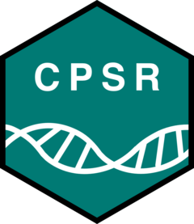

Infer CPIC phenotypes for pharmacogenes with detected variant alleles
Source:R/pgx.R
assign_pgx_phenotypes.RdFor each gene with at least one detected CPIC allele of altered function, a diplotype (the pair of CPIC alleles on the two gene copies, e.g. TPMT *1/*3C) is assembled from the detected alleles, and mapped to a CPIC phenotype (pgx_phenotype, reference data bundle). The following conventions apply:
Details
Genes without detected altered-function alleles are not reported
CPIC allele positions without a called variant are assumed to be homozygous reference (not confirmed from the input VCF). A gene copy without a detected allele is thus the CPIC reference allele (e.g. TPMT *1, DPYD 'Reference')
Two different heterozygous alleles are assumed to be in trans (phase is not assessed)
Alleles whose defining variants are a subset of another detected allele (e.g. TPMT *3B/*3C vs. *3A) are collapsed into the larger allele
X-linked genes (G6PD) are hemizygous in males (one allele, any variant call counted as a single copy), and diploid in females
The phenotype is not determined ('Not determined') when detected variants only partially define an allele (e.g. DPYD c.1236G>A without c.1129-5923C>G), when more altered-function alleles are found than expected from ploidy, or for X-linked genes when sample sex is unknown